TESSEL
A family of small instruments that snap together.
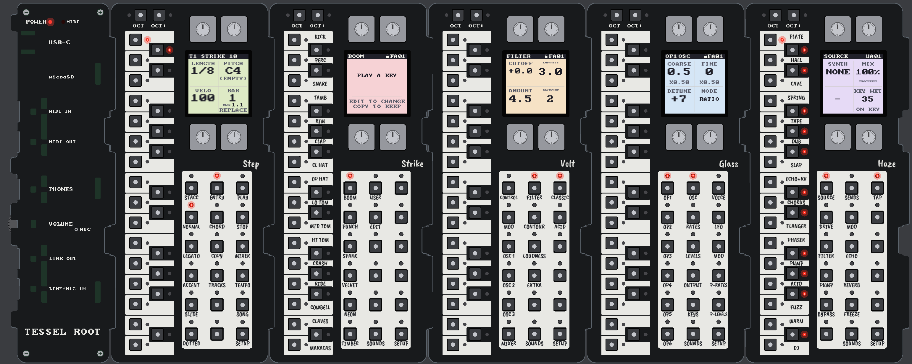
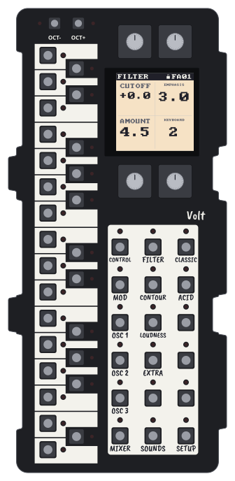
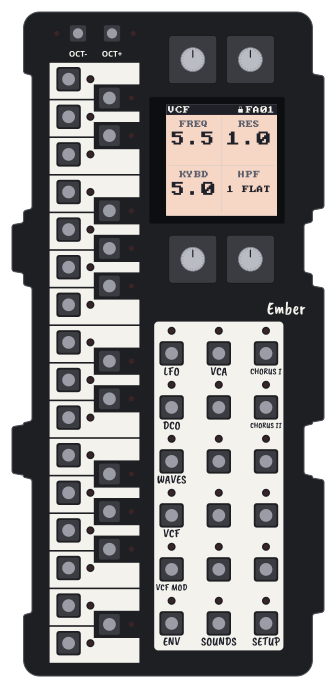
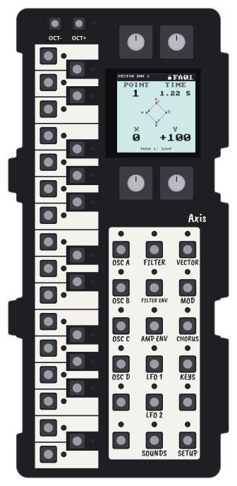
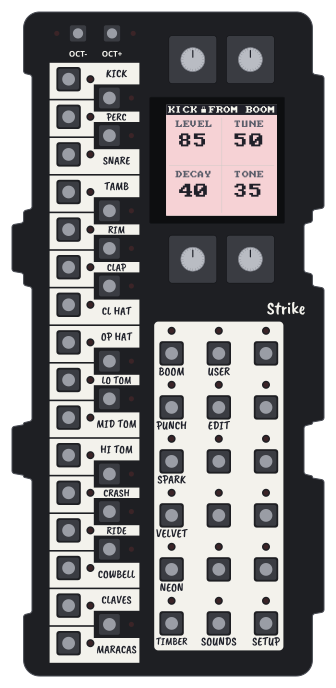
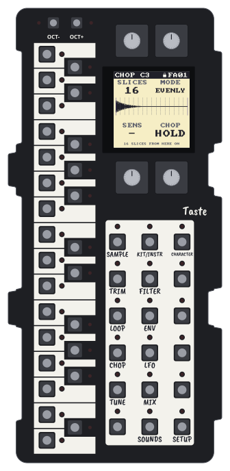
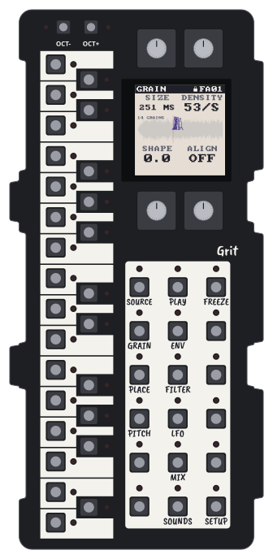
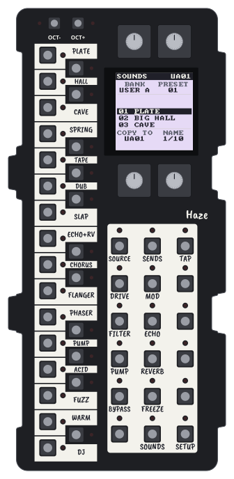
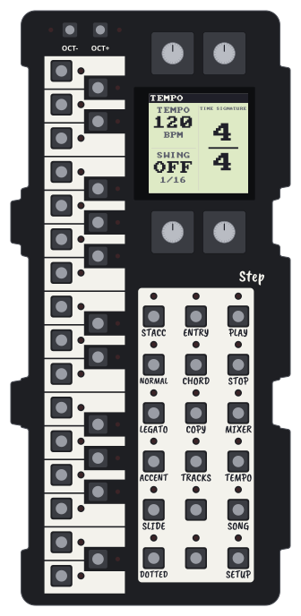
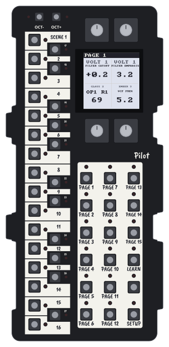
Glass FM synthVolt Mono synth for bass and leadEmber Six-voice synth for chords and padsAxis Vector synthStrike Drum machineTaste SamplerGrit Granular synthHaze EffectsStep SequencerPilot Controller
Every unit can be any of ten instruments
Every Tessel unit is the same hardware, with 27 keys, a colour screen, four encoders and eighteen buttons. What it becomes is up to you: an FM synth, a drum machine, a sampler, a sequencer, an effects unit or one of the others, and you can change your mind as often as you like.
Snap them together
Units join side by side with magnets. The Root on the left takes the power and gives out the sound, for headphones, speakers or a computer.
Choose what each becomes
A new unit starts blank. You turn one encoder to pick what it should be and hold another, and it takes the software from the Root, which keeps all ten.
Play, and make music
There are over two hundred factory sounds to start from, and room for your own. Step sequences the whole row and Haze adds the reverb and echo, all without a computer.
Hear it
These are the tracks you build in Making Music, made on Tessel units by following the book's own steps. They're deliberately plain, so you can hear what each part does; what you do with them is up to you.
Step, Strike, Volt
Step, Strike, Volt, Haze
Step, Strike, Volt, Ember, Haze
Step, Taste, Strike, Volt
Step, Axis, Grit, Haze
Step, Strike, Volt, Ember, Glass, Axis, Haze
Learn by building
Tessel was designed to teach as well as to play. Two free books take you from your first sound to finished tracks, a step at a time, and every result in them is there to listen to.
Making Sounds
The first chapters explain what a sound is made of; after that there's a chapter for each kind of unit, in which you build sounds from a blank start and find out why each control does what it does. One unit is enough to begin.
Making Music
Seven styles, from techno and acid to ambient and synthwave, each with a little of its history and three tracks for you to write on Step, starting simple and growing from there.
Deluxe panels
Every unit comes with the standard panel: black, with a white area under the buttons where you write their names on by hand. If you'd like something smarter, deluxe panels, with every name printed, are available as an upgrade, in a colour for each family: blue for the synths, white for the drums and samplers, purple for Step and Pilot, and green for Haze.
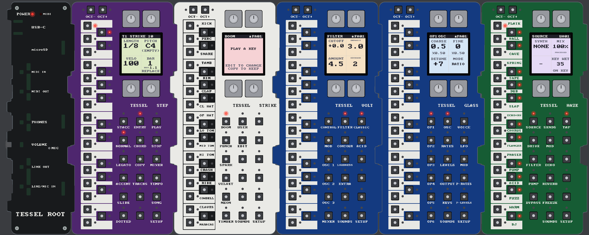
◀ Standard panels, as every unit comesDrag the barDeluxe panels, an optional upgrade ▶
Yours to keep
You'll never need an account, a subscription or an app to use a Tessel. Firmware updates are free, and you can change what any unit is as often as you like.